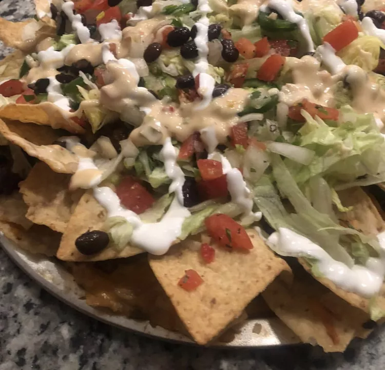

Nachos

Description
Nachos are a highly customizable dish and can be tailored to anyone's particular toast. This recipe is for Loaded Nachos .
This dish is wonderfully filling and can be shared by a party of up to 6 people.
Ingredients
- Tortilla Chips
- Shredded Cheddar Cheese
- Sliced Olives
- Tomatoes
- Jalapenos
Steps
- Place the tortilla chips in an even layer over the baking sheet.
- Sprinkle half of the available shredded cheddar evenly across the chips.
- Finely dice the tomatoes and jalapenos, as well as the olives if you do not have pre-sliced ones.
- Evenly distribute the toppings across the tortilla chips.
- Cover the dish with the remaining half of your shredded cheese.
- Bake at 350 degrees Fahreheit for 10-15 minutes.